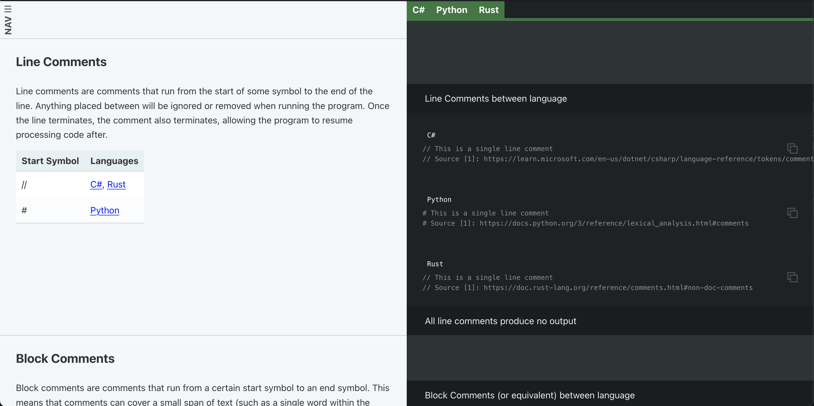
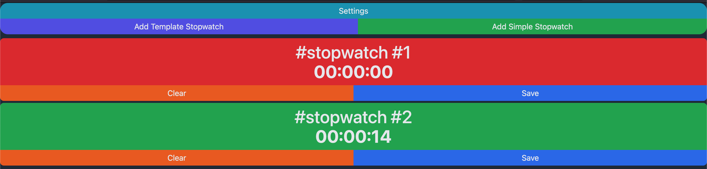
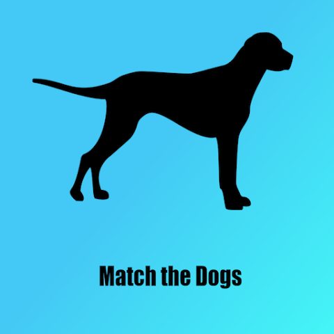
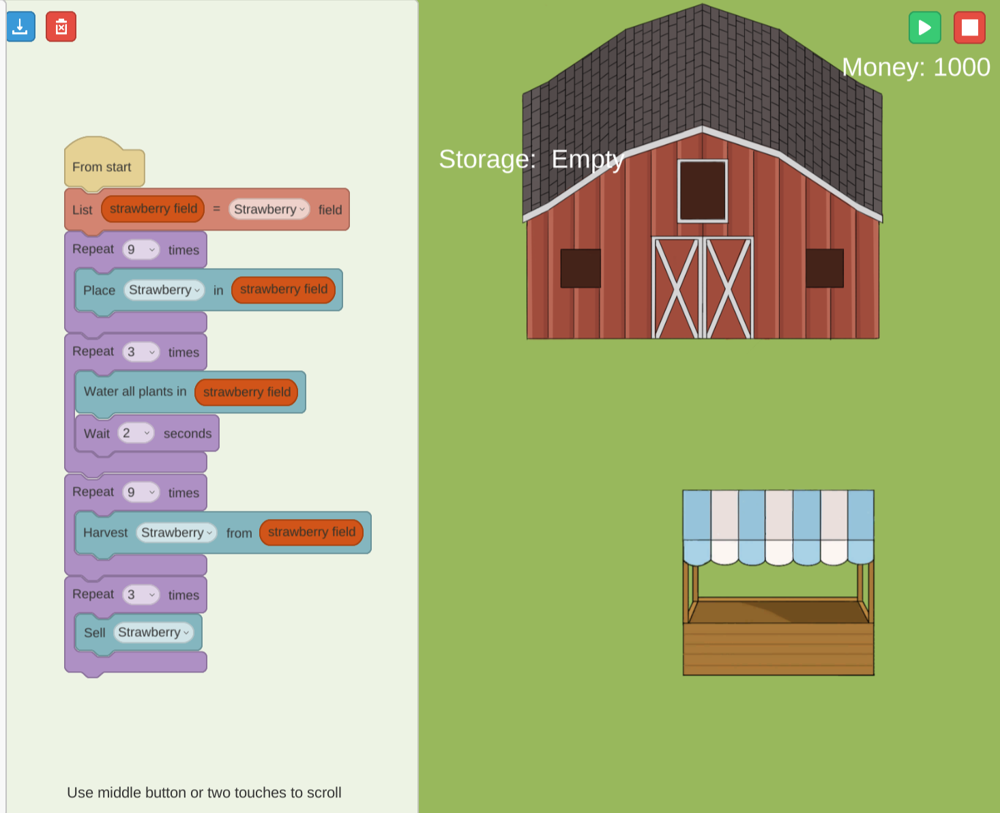
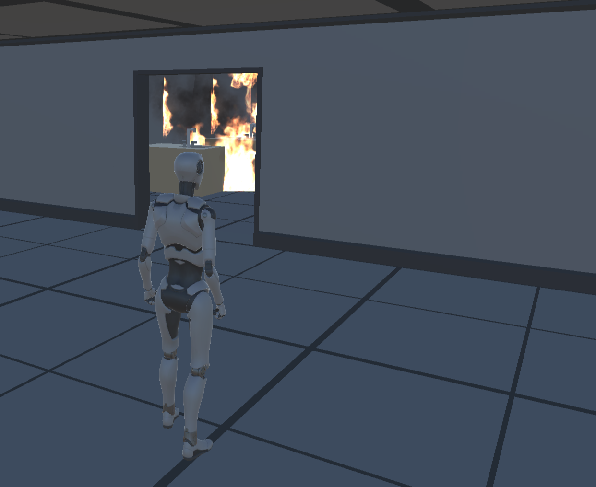
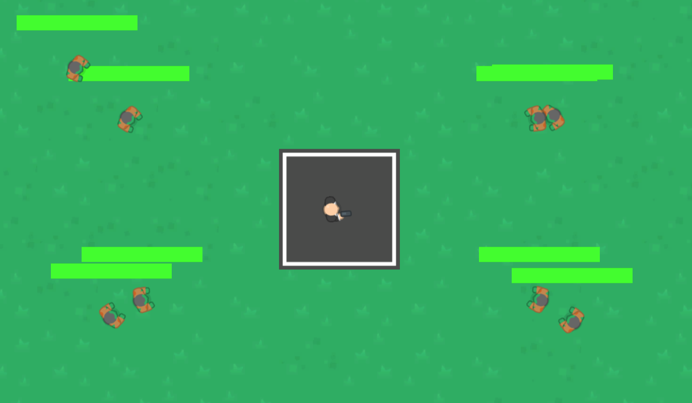
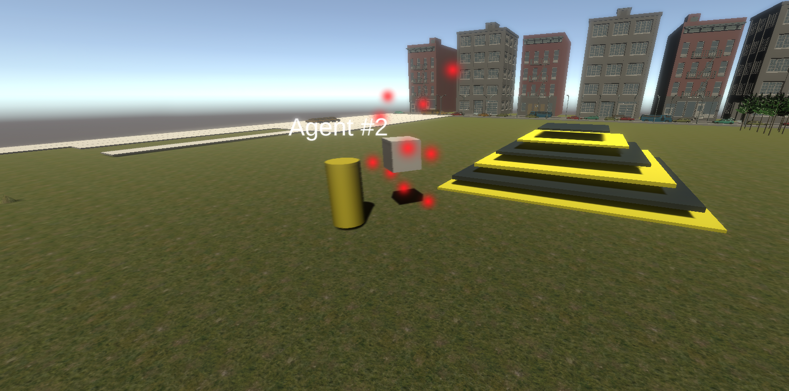

Projects
Personal Projects
These are some personal projects I've worked on.
Comp-Lang-Comp
A website to help compare the syntaxes of many different programming languages.
Tech-Tree-Blog
A website to hold my blog post and notes on computer science, mathematics, and technology explainers.
Nomie 6 Stopwatch
A plugin I created for Nomie 6 to allow a more unified way of using the timer trackers. Used to help learn about and develop TypeScript projects.
Student Projects
These are some student projects I helped with. For these project, I primarily assisted with programming and game design based on input from students. All of the game presented here were made in Unity
Toewr_le_Fence

A 3D/2D tower defense game using memes as the theme. Available on Steam.
Bridge2Code

A 2D puzzle game where one writes a script to build a bridge. Available on Itch.io and Steam.
Pawdometer
A match 4-game with dog theming and with integration with a sibling app to monitor dog steps. Available on the Google Play store.
StemSisters Program-1
A 2D coding farming that helps teach students about coding.
Escape from Emergency Simulator
A 3D first person simulation game that can be used to teach others how to react in an emergency situation, such as a fire.
Horde

A 2D multiplayer co-op survival game where one is tasked with killing all the zombies and escaping with friends.
Dungeon Project 1
A 2D top-down shooter game where one has to kill all the enemies inside the level.
Clean Up Crew
A simple 3D game where one is tasked with controlling robots to move boxes from one area to the scoring zone.
School Projects
These are school projects I worked on.
Withered Away by Team Alpha for ICS 169AB

A 2D platforming game for the Capstone class. I worked on music and audio for the game, and assisted with coding. Available for download on Itch.io for Windows and Mac.
Energy-Ball for ICS 161

My first Unity game, adapted from Roll-a-Ball template. Go through the level and build up energy for jumps. Available online on Itch.io.
Crowded Market for ICS 166

A Unity game designed to simulate a marketplace using a simple AI implemented using Navigation Mesh and priority queue. Available online on Itch.io.
- Collabuilder for ICS 175 : A reinforcement learning project using Project Malmo to make an agent that can build a house.
- Teapot for CS 418: The final project for Interactive Graphics class, focusing on using knowledge of the graphics pipeline and applying that to texturing a teapot.
Work Projects
These are work projects I had a hand in developing.
- Unity Game Exercise Templates:
- Old Unity 2 Templates:
- Unity 2 - Platforming : Template to help guide with developing a 2D Platformer. Used to help teach how to use Unity's tilemap system, understand 2D physics, and save data across levels.
- Unity 2 - RTS : A simple RTS template to provide scaffolding for learning about inheritance and polymorphism.
- Unity 2 - Tower Defense : A simple tower defense game used to help teach Unity's scriptable object. Modified from the Unity 2 RTS project.
- Unity 2 - Platforming : An updated 2D platform for Unity 2, focusing on improving assets and making the lesson flow clearer.
- Unity 2 - Module 3 Exercises : 5 exercise scenes to help reinforce Unity teachings.
- Unity 3 - Module 1 Obstacle Course: A simple 3D obstacle course that is used to teach Unity' new Input System and local computer multiplayer.
- Unity 3 - Multiplayer Pong Template: A simple Pong setup framework to help teach multiplayer using Unity's Netcode for GameObjects.
- Unity 3 - Steam NGO Example: A set of scenes showing how to combine Steam and Unity's Netcode for GameObject.
- Unity 4 - ML-Agents Example: A set of prefabs and scripts used to bootstrap working with Unity's ML-Agents package.
- Old Unity 2 Templates: